Szagok könyve
Seneca, Budapest, 2000.
Olvasás a Magyar Elektronikus Könyvtárban ↗Irodalom · Zene · Családi emlékek
Elek István szépirodalmi és zenei munkáinak külön oldala.
Az Elek Ignác név apai dédapám neve volt. Ezen a néven írok és zenélek, hogy elkülönítsem a művészeti munkáimat a természettudományos tevékenységemtől.
Ezen az oldalon a nem szakmai tevékenységem mutatom be. Elek Ignác apai dédapám neve volt, nekem az István nevet adták drága, jó szüleim. Mégis Elek Ignác név alatt írok, zenélek, talán, hogy élesen elválasszam természettudományos tevékenységemet a művészitől (bocsánat, de jobb kifejezést nem találtam).
1956. december 10.-én születtem Kispesten. Az Vécsey utcai általános iskola elvégzése után középiskolai tanulmányaimat 1971-ben kezdtem meg az ELTE Apáczai Csere János Gyakorló Gimnázium speciális kémia szakán. Később átmentem az ELTE Radnóti Miklós Gyakorló Gimnáziumba egy matematika szakos osztályba. Ott érettségiztem 1975-ben. 11 hónapos kötelező katonai szolgálat után 1976-ban beíratkoztam az ELTE Természettudományi Kar Geofizikus szakára. 1981-ben avattak okleveles geofizikussá.
Ötéves koromtól tanultam zongorázni. A klasszikusokon és Bartókon nevelkedtem. 13 éves koromig zenésznek készültem, de egy könyv hatására alapvetően megváltoztam, mert beleszerettem a természettudományokba. Ez a vonzalom azóta is tart. Noha kiválóan elvégeztem az előképzőt, de már csak magántanulóként tanultam zongorázni, pontosabban a jazz zongora érdekelt nagyon (persze nem annyira, mint a tudomány).
Egyetemista koromban be-bejártam a jazz konziba, amolyan vendéghallgatóként, de akkor és ott világossá vált, hogy nem vagyok elhivatott zenész, csak műkedvelő. Azóta eltelt több évtized, de zenélni még most is nagyon szeretek, főként magamnak, amikor nem hallja senki.
Az íráshoz negyvenéves korom táján kaptam kedvet. Valami kikívánkozott belőlem, ami, ha bent marad, rossz közérzetet okozott volna. Nem maradt bent. Most is írok. Van ami megjelent, de van, amit a fiókban tartok. Egyszer talán ezeket is elviszem valamelyik kiadóba. Ha nem adják ki, az sem baj, elvégre ezeket ugyanúgy magamnak írom, mint a zenéket.
Felmenőim valamennyien Erdélyből valók. Apai nagyszüleim tanáremberek voltak. Máramarosszigeten éltek 1945-ig, onnatól Kispesten. Nagyapám jól zongorázott és hegedült. Nem sokon múlt, hogy nem zenész lett. Anyai nagyszüleim szülőföldje Háromszék és a Barcaság. Nagyapám elpusztíthatatlan nagyajtai székely volt (mindkét világháborúban harcolt, és csodával határosan hazajött). Törvényszéki irodaigazgatóságig vitte. Nagyanyám gazdag hétfalusi csángó család sarja, 1920-ban telepedtek le Kispesten.
Hét gyermeket nevelt. Apám még Szatmárnémetiben született, anyám már Pesten. Apám a háború miatt csak 1946-ban tudott ledoktorálni a pesti Jogi Karon. A Kispesti Járásbíróságon kezdte pályafutását. Itt ismerkedtek meg a szüleim 1947-ben, majd 1950-ben egybekeltek. Ennyi elég is, a többi benne van (vagy lesz) a könyvekben.
Az eredeti honlap negyven hangfelvétele, az eredeti fájlokból. A lejátszás a böngészőben történik.
Seneca, Budapest, 2000.
Olvasás a Magyar Elektronikus Könyvtárban ↗2002-ben elektronikusan megjelent regény.
Olvasás a Magyar Elektronikus Könyvtárban ↗2014.
Olvasás a Magyar Elektronikus Könyvtárban ↗A régi honlapon befejezetlen kéziratként szerepel.
Néhány érdekesség Erdélyből, amit nagyszüleimtől hallottam.
Jó reggelt, jó reggel adjon az úristen, Régi szokás szerint versmondani jöttem, Gyönyörű a tavasz, harmatos a reggel, Áldásokat oszt az arany kikelet. Feltámadt a Jézus, mondják az írások, buzognak források Máma vízbevető hétfő, nekem is úgy tetszik, Látom, az utcán egymást öntözgetik, Én is elindultam fiatal létemre, Hogy harmatot öntsek e szép növendékre, Mert ha meg nem öntöm ezen esztendőben, Nem virágzik szépet nekünk jövendőben. Virágozzék szépet, ékes virágokat, Nyerjen az egekben fényes koronákat. Ha nem adnak tojáskát, ülü vigye a tyúkocskát.
Szegény fejem uramhoz óhajt Töredelmes szívvel fejet hajt Én istenem, mely sok vétkem Mutass nekem újúlást Hogy pokolbaa ne kiáltsak véghetetlen jajt Kis koromban az órában Mért nem tettél a sírba Bűnnek halmaa nem jött volna Apró csontomra
A régi oldalon kotta későbbi közlését ígéri; kottát nem találtunk a rendelkezésre álló szövegben.
Az eredeti rejtvényképek a régi honlap sorrendjében. A képekre kattintva teljes méretben nyithatók meg.
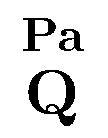
2. kép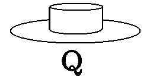
3. kép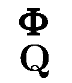
4. kép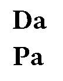
5. kép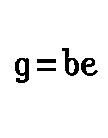
6. kép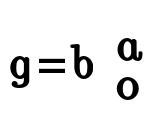
7. kép8. kép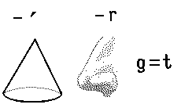
9. kép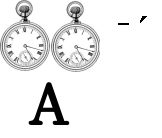
10. kép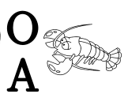
11. kép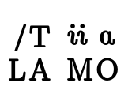
12. kép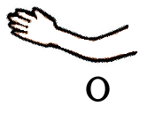
13. kép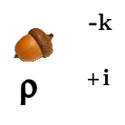
14. kép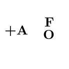
15. kép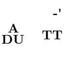
16. kép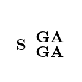
17. kép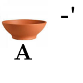
18. kép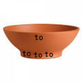
19. kép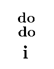
20. kép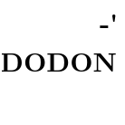
21. kép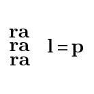
22. kép23. kép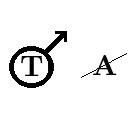
24. kép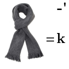
25. kép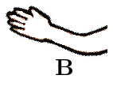
26. kép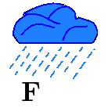
27. kép28. kép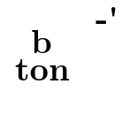
29. kép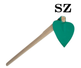
30. kép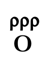
31. kép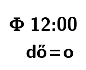
32. kép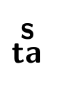
33. kép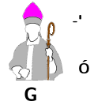
34. kép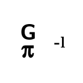
35. kép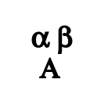
36. kép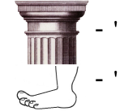
37. kép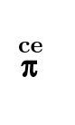
38. kép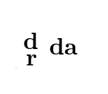
39. kép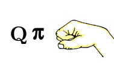
40. kép41. kép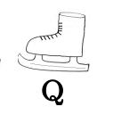
42. kép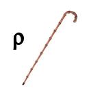
43. kép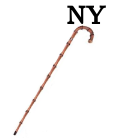
44. kép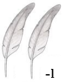
45. kép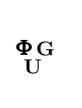
46. kép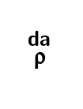
47. kép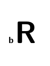
48. kép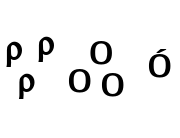
49. kép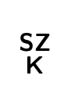
50. kép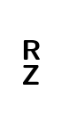
51. kép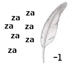
52. kép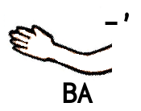
53. kép54. kép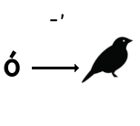
55. kép56. kép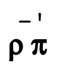
57. kép58. kép59. kép60. kép61. kép62. kép63. kép64. kép65. kép66. kép67. kép68. kép69. kép70. kép71. kép72. kép73. kép74. kép75. kép76. kép77. kép78. kép79. kép80. kép81. kép82. kép83. kép84. kép85. kép86. kép87. kép88. kép89. kép90. kép91. kép92. kép93. kép94. kép95. kép96. kép97. kép98. kép99. kép100. kép101. kép102. kép103. kép104. kép105. kép106. kép107. kép108. kép109. kép110. kép111. képAz eredeti megfejtések külön dokumentumban is megmaradtak: megfejtesek.odt